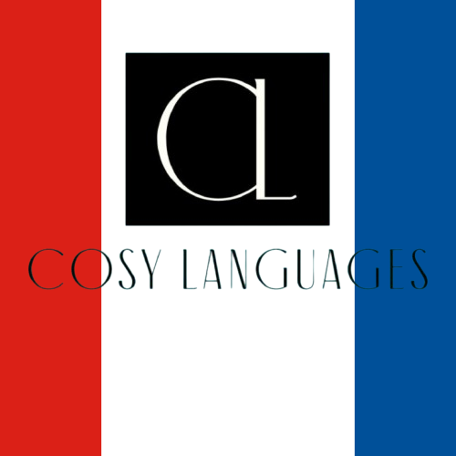
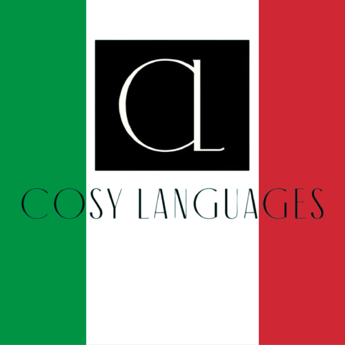
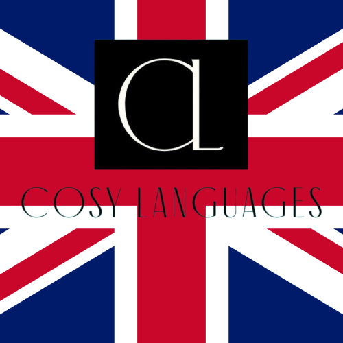

Figure 1: Discussion et échange d'idées autour d'un café à Paris.
Inside our pedagogical framework: combining CELTA-staged communicative frameworks, spaced practice, and authentic target language tasks.
Welcome to our editorial room! Here, you'll find personal journal notes, language learning philosophies, and canonical curriculum guides across all 14 COSY target languages.
Every article in COSYmagazine is written in authentic target language text with CELTA-aligned concept checking questions and natural conversational models.
Listen to Founder JY DM break down how speaking from day one accelerates natural fluency.
Επίσημη και ακριβής επιλογή για γραπτό και προφορικό λόγο.
Χρησιμοποιείται για σαφείς τοποθετήσεις και απόψεις.
Εκφράζει τεκμηριωμένη γνώμη και επιχειρηματολογία.



"To have another language is to possess a second soul."
"Limits of my language mean the limits of my world."
"Language is the road map of a culture. It tells you where its people come from."
When you start learning a language, grammar tables feel safe. But true confidence comes when you open your mouth in lesson one.
Traditional language teaching often treats conversation as the final prize, awarded only after years of memorising verb paradigms and vocabulary lists. At COSYlanguages, we reverse this hierarchy entirely.
Grammar and vocabulary are essential tools, but they are tools in service of communication. When students speak from their very first session, they build neural pathways connecting thought directly to speech, eliminating the friction of internal translation.